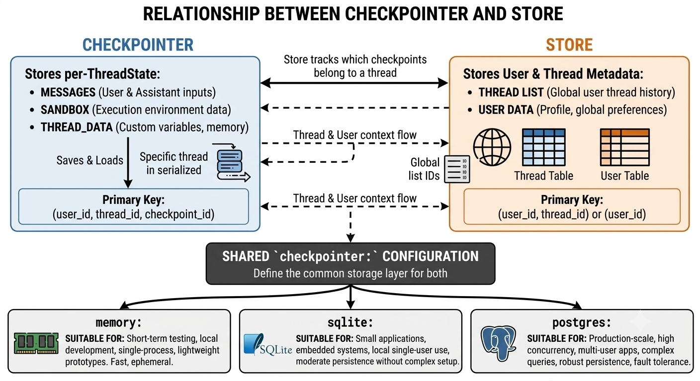
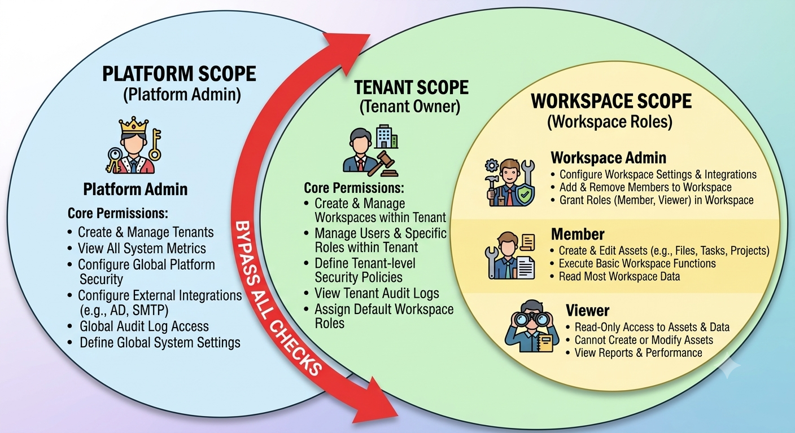
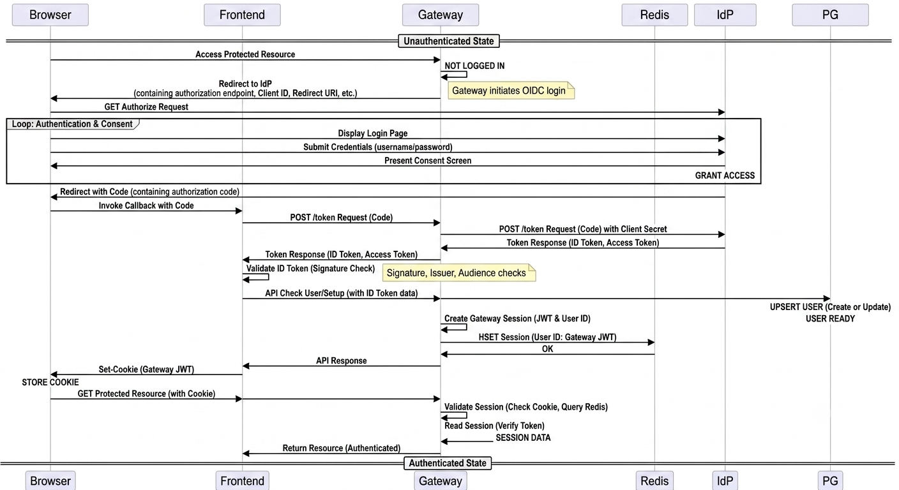
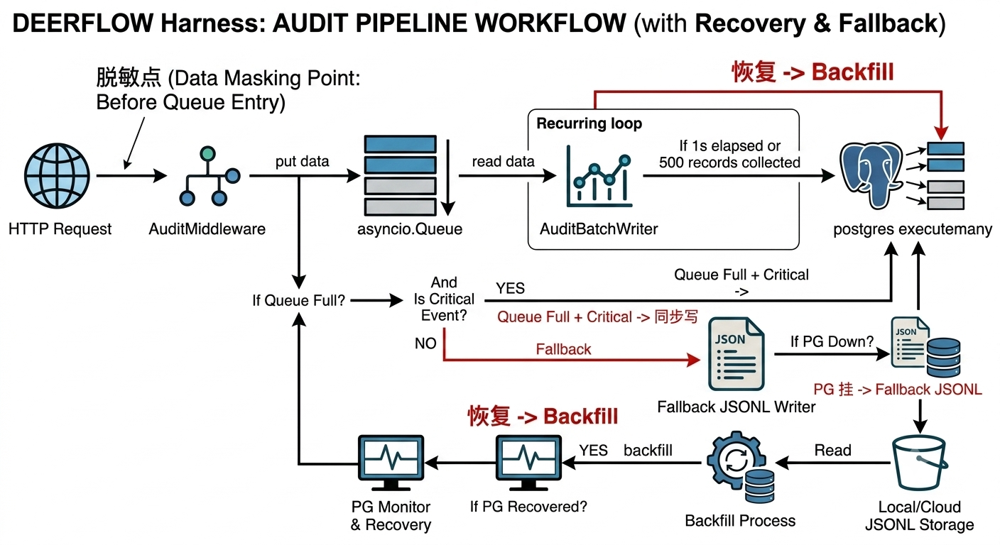
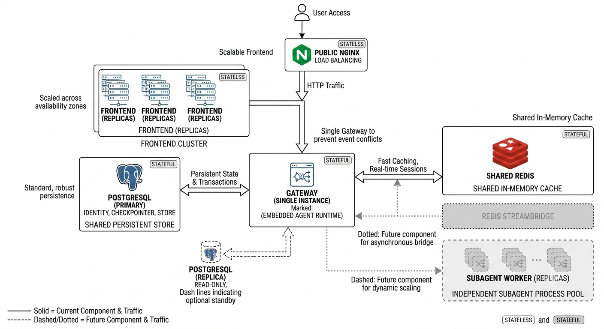

目录
上篇：Harness — Agent 运行时引擎
- Harness 全景
- 两种运行模式
- Agent 工厂链
- 中间件链
- Runtime 子系统
- Checkpointer 检查点系统
- Store 持久化系统
- Stream Bridge 事件流
- 模型工厂
- 内存 / 记忆系统
- Sandbox 沙箱系统
- Subagent 子智能体
- Tool 系统
- Skills 技能系统
- Config 配置系统
中篇：身份 / 多租户 / 审计 16. 身份与多租户子系统 17. 审计子系统 18. 前端架构
下篇：部署与面试 19. Checkpoint 迁移到 MySQL 方案 20. 部署影响分析 21. 核心请求流 Deep Dive 22. 架构图 Prompt 合集 23. Agent 面试 / JD 知识点映射 24. 深入追问与自测
上篇：Harness — Agent 运行时引擎
1. Harness 全景
1.1 是什么
Harness 是 DeerFlow 的 Agent 运行时引擎，位于 backend/packages/harness/deerflow/。它作为一个可独立发布的 Python 包，提供了完整的 AI Agent 执行能力。
核心职责：
- 组装 LangGraph Agent（lead agent + 14 层中间件链）
- 管理 Agent 执行生命周期（创建 → 运行 → 中断 → 恢复 → 清理）
- 提供沙箱执行环境（sandbox）与 bash 安全审计
- 提供状态持久化（checkpointer + store，支持 memory/sqlite/postgres）
- 提供事件流管道（StreamBridge，当前内存实现，未来 Redis）
- 提供工具系统、技能（skills）、子智能体（subagent）委派
- 提供模型工厂，适配 10+ LLM provider
关键依赖红线：
app.*可以 importdeerflow.*，但deerflow.*绝不能 importapp.*。这条红线由tests/test_harness_boundary.py在 CI 中强制执行，确保 harness 包可以在任何 Python 项目中独立使用，不耦合 DeerFlow 的业务逻辑。
1.2 包结构总览
backend/packages/harness/deerflow/
├── agents/ ← Agent 核心
│ ├── lead_agent/ Lead agent 工厂 + prompt 模板
│ ├── checkpointer/ 检查点持久化（memory/sqlite/postgres）
│ ├── memory/ 对话记忆系统
│ ├── middlewares/ 14 个中间件实现
│ ├── factory.py SDK 级工厂 create_deerflow_agent
│ ├── features.py 声明式 Feature Flag + @Next/@Prev 装饰器
│ └── thread_state.py ThreadState schema
│
├── runtime/ ← Gateway 模式运行时
│ ├── main_loop.py 主事件循环注册 + submit_to_main_loop
│ ├── runs/ RunManager + run_agent 异步 worker
│ ├── store/ Store 持久化（checkpoint 配套系统）
│ ├── stream_bridge/ SSE 事件流管道（内存/未来 Redis）
│ └── serialization.py LangGraph 对象序列化
│
├── sandbox/ ← 沙箱抽象
│ ├── sandbox.py Sandbox ABC
│ ├── sandbox_provider.py SandboxProvider ABC
│ ├── local/local_sandbox.py LocalSandbox 实现
│ ├── local/local_sandbox_provider.py
│ ├── middleware.py 沙箱中间件
│ ├── tools.py 沙箱工具（bash, read_file, write_file…）
│ ├── search.py 搜索工具
│ └── security.py 安全工具
│
├── subagents/ ← 子智能体执行池
│ ├── executor.py SubagentExecutor + 线程池管理
│ ├── config.py SubagentConfig
│ └── registry.py 注册表
│
├── tools/ ← 工具系统
│ ├── builtins/ task_tool, present_file, view_image…
│ ├── tools.py get_available_tools 工厂
│ └── skill_manage_tool.py
│
├── skills/ ← 技能系统
│ ├── loader.py loader + tenant 分层扫描
│ ├── install.py / manager.py
│ └── manifest.py / parser.py / validation.py
│
├── models/ ← 模型工厂
│ ├── factory.py create_chat_model
│ ├── credential_loader.py
│ ├── patched_openai.py / patched_deepseek.py / patched_minimax.py
│ ├── claude_provider.py / vllm_provider.py / mindie_provider.py
│ └── openai_codex_provider.py
│
├── mcp/ ← MCP 客户端
│ ├── client.py MultiServerMCPClient
│ ├── cache.py 工具列表缓存
│ ├── tools.py / oauth.py
│
├── community/ ← 第三方集成
│ ├── aio_sandbox/ 远程沙箱
│ ├── tavily/ / jina_ai/ / exa/ 搜索工具
│ ├── firecrawl/ / ddg_search/ 网页抓取
│ ├── infoquest/ 情报查询
│ └── image_search/ 图片搜索
│
├── config/ ← 配置系统（~20 个配置 model）
├── identity_propagation.py ← M5 HMAC 签名/校验
├── guardrails/ ← 护栏中间件
├── tracing/ ← 链路追踪
├── reflection/ ← 字符串→类反射解析
├── uploads/ ← 文件上传管理
├── client.py ← 嵌入式 Python 客户端
└── utils/ ← 工具函数

2. 两种运行模式
DeerFlow 支持两种运行模式，决定 Agent 在哪个进程中执行。
2.1 Standard 模式（4 进程）
Nginx (2026)
├── Frontend (3110, Next.js)
├── Gateway API (8100, FastAPI) ← 只做 REST 入口
└── LangGraph Server (2024) ← Agent 真正执行的地方
├── 独立的 LangGraph SDK 进程
├── 加载 agent → graph.astream()
└── 通过 SSE 流式返回
Gateway 负责：API 路由、身份认证、审计
LangGraph Server 负责：Agent 创建、中间件链执行、工具调用、沙箱操作
2.2 Gateway 模式（3 进程）
Nginx (2026)
├── Frontend (3110, Next.js)
└── Gateway API (8100, FastAPI) ← 嵌入 Agent 运行时
├── deerflow.runtime.RunManager 管理执行记录
├── deerflow.runtime.run_agent() 后台 Task 执行 agent
├── deerflow.runtime.StreamBridge 事件流管道
└── 直接 graph.astream() 之后 SSE 推送
Agent 运行时嵌入 Gateway 进程，无独立 LangGraph Server。/api/langgraph/* 路径在 nginx 配置中通过 envsubst 改写指向 Gateway。
2.3 对比总结
| 维度 | Standard | Gateway |
|---|---|---|
| 进程数 | 4 | 3 |
| Agent 执行位置 | LangGraph Server | Gateway 进程内 |
| 网络跳转 | Gateway → LG Server (HTTP) | 无（同进程） |
| 运维复杂度 | 多一个进程 | 更简单 |
| Gateway 进程负载 | 轻 | 重（嵌入 agent 执行） |
| 适用场景 | 开发/小规模 | 生产/私有化部署 |
个人评价：Gateway 模式更适合生产部署——少一个进程、减少网络跳转、简化运维。代价是 Gateway 进程的 CPU/内存消耗更高。建议 Gateway 模式 + Postgres checkpointer + 单实例部署。
3. Agent 工厂链
Agent 的创建有两层工厂，分别服务于不同场景。
3.1 create_deerflow_agent() — SDK 级工厂
位于 agents/factory.py，纯参数驱动，不依赖 YAML 配置或全局单例：
def create_deerflow_agent(
model: BaseChatModel,
tools: list[BaseTool] | None = None,
*,
system_prompt: str | None = None,
middleware: list[AgentMiddleware] | None = None, # 完全接管
features: RuntimeFeatures | None = None, # 声明式 Feature Flag
extra_middleware: list[AgentMiddleware] | None, # @Next/@Prev 定位插入
plan_mode: bool = False,
state_schema: type | None = None,
checkpointer: BaseCheckpointSaver | None = None,
name: str = "default",
) -> CompiledStateGraph:
三个互斥参数控制中间件组装：
middleware：完全接管，传什么用什么features：声明式 Feature Flag（RuntimeFeatures），自动组装extra_middleware：通过@Next(SomeMiddleware)/@Prev(SomeMiddleware)精准定位插入
3.2 RuntimeFeatures 声明式 Feature Flag
@dataclass
class RuntimeFeatures:
sandbox: bool | AgentMiddleware = True # 沙箱
memory: bool | AgentMiddleware = False # 对话记忆
summarization: Literal[False] | AgentMiddleware = False # 自动摘要
subagent: bool | AgentMiddleware = False # 子智能体
vision: bool | AgentMiddleware = False # 视觉
auto_title: bool | AgentMiddleware = False # 自动标题
guardrail: Literal[False] | AgentMiddleware = False # 护栏
每个 feature：
True→ 使用内置默认中间件False→ 禁用AgentMiddleware实例 → 使用自定义实现替换
summarization 和 guardrail 没有内置默认实现——它们只接受 False 或自定义实例。
3.3 @Next / @Prev 装饰器机制
通过装饰器声明中间件的定位：
@Next(TitleMiddleware) # 表明这个中间件应该插在 TitleMiddleware 之后
class MyCustomMiddleware(AgentMiddleware):
pass
_assemble_from_features() 中的定位算法：
- 验证：每个中间件最多只能有
@Next或@Prev其中之一 - 冲突检测：两个中间件不能瞄准同一个锚点（相同或相反方向）
- 无锚点中间件 → 插在
ClarificationMiddleware之前 - 有锚点中间件 → 迭代解析（支持外部中间件之间的互相锚定）
- 最终保证：
ClarificationMiddleware永远在链尾
3.4 make_lead_agent() — 应用级工厂
位于 agents/lead_agent/agent.py，配置驱动，读取 config.yaml + agents config：
def make_lead_agent(config: RunnableConfig):
完整创建流程：
RunnableConfig
│
├─ cfg = config["configurable"] | ["context"]
│
├─ 解析运行时参数: model_name, thinking_enabled, reasoning_effort,
│ is_plan_mode, subagent_enabled, max_concurrent_subagents,
│ is_bootstrap, agent_name
│
├─ 加载 custom agent 配置（agent_name → load_agent_config）
│
├─ _resolve_model_name(requested_model_name | agent_model_name)
│ └─ 在 models 列表中查找 → 找不到则回退 default model
│ └─ 无 models 配置 → ValueError
│
├─ _resolve_skills_and_deps(agent_config)
│ └─ 解析 skills 列表 ["name@version", ...]
│ └─ 加载 manifest → 收集 requires_tools
│ └─ 收集 env injections（如 org API key）
│ └─ 合并 extra_tool_groups
│
├─ 模型: create_chat_model(name=model_name, thinking_enabled, reasoning_effort)
│
├─ 工具: get_available_tools(model_name, groups=merged_tool_groups, subagent_enabled)
│
├─ 中间件: _build_middlewares(config, model_name, agent_name, custom_middlewares)
│ └─ 14 层中间件链有序组装
│
├─ Prompt: apply_prompt_template(subagent_enabled, available_skills, agent_name)
│
└─ LangGraph create_agent(model, tools, middleware, system_prompt, state_schema)
重要：检查点（checkpointer）不是在工厂中附着的，而是在 run_agent worker 中运行时附加：
# runtime/runs/worker.py
agent = agent_factory(config=runnable_config)
if checkpointer is not None:
agent.checkpointer = checkpointer
if store is not None:
agent.store = store
4. 中间件链
这是 Agent 最核心的架构模式——中间件在 agent 每次 LLM 调用前后和工具调用前后插入自定义逻辑。
4.1 Hook 机制
class AgentMiddleware:
def before_agent(self, state, runtime) -> dict | None # LLM 调用前
def after_agent(self, state, runtime) -> dict | None # LLM 调用后
def wrap_tool_call(self, request, handler) -> ToolMessage # 工具调用前后包装
async def awrap_tool_call(self, request, handler) -> ... # 异步版本
4.2 完整中间件链（14 层）
从最内到最外（执行顺序）：
执行方向: 请求 → [Clarification → ... → Identity] → LLM → [Identity → ... → Clarification] → 响应
位置 Middleware 文件 核心职责
───────────────────────────────────────────────────────────────────────────────────────────────
[0] IdentityMiddleware agents/middlewares/identity_middleware.py
身份传播（M5）。验证 HMAC 签名的 X-Deerflow-* headers → state["identity"]。
子 agent 直接继承 identity，不走 HMAC。
[1] ThreadDataMiddleware agents/middlewares/thread_data_middleware.py
thread_data 初始化。设置 thread_id、sandbox 目录路径。
[2] UploadsMiddleware agents/middlewares/uploads_middleware.py
上传文件注入。读取 tenant-aware 路径下的用户 uploads → <uploaded_files> block。
[3] SandboxMiddleware sandbox/middleware.py
沙箱生命周期管理。按需创建/销毁 sandbox 容器。
[4] DanglingToolCallMiddleware agents/middlewares/dangling_tool_call_middleware.py
修复"悬挂"的 ToolMessage。LLM 输出的 tool_call 如果没有对应 ToolMessage，
自动补 error ToolMessage，避免循环中断。
[5] SandboxAuditMiddleware agents/middlewares/sandbox_audit_middleware.py
Bash 命令安全审计。20+ 正则规则分级 Block/Warn/Pass。
[6] ToolErrorHandlingMiddleware agents/middlewares/tool_error_handling_middleware.py
工具异常处理。ToolException → ToolMessage(status="error")，防止未捕获异常中断循环。
[7] SummarizationMiddleware agents/middlewares/summarization_middleware.py
长对话自动摘要。触发条件可配（token 数 | 消息数），保留最近 N 条。
[8] TodoMiddleware agents/middlewares/todo_middleware.py
Plan 模式的 TODO 列表管理。write_todos 工具 + system prompt。
[9] TitleMiddleware agents/middlewares/title_middleware.py
自动标题。首次对话后调用 LLM 生成标题。
[10] TokenUsageMiddleware agents/middlewares/token_usage_middleware.py
Token 用量统计。每次 LLM 调用记录 input/output tokens。
[11] MemoryMiddleware agents/middlewares/memory_middleware.py
持久记忆。after_agent 排队 → 后台 updater → before_agent 注入记忆 prompt。
[12] ViewImageMiddleware agents/middlewares/view_image_middleware.py
图片查看。用户发送图片时自动调用 view_image 获取描述。
[13] LoopDetectionMiddleware agents/middlewares/loop_detection_middleware.py
循环检测。连续重复 tool call → 打断 + 提示。
[14] ClarificationMiddleware agents/middlewares/clarification_middleware.py
澄清请求拦截。LLM 输出的 clarify 请求直接返回用户，不继续执行。永远在链尾。
4.3 中间件排序逻辑（_build_middlewares）
def _build_middlewares(config, model_name, agent_name, custom_middlewares):
# 1. 基础运行时中间件（[0-3] ± [4-6] 的固定部分）
middlewares = build_lead_runtime_middlewares(lazy_init=True)
# 2. 可配置中间件按严格顺序 append
if summarization_enabled: middlewares.append(SummarizationMiddleware(...))
if plan_mode: middlewares.append(TodoMiddleware(...))
if token_usage_enabled: middlewares.append(TokenUsageMiddleware())
middlewares.append(TitleMiddleware())
middlewares.append(MemoryMiddleware(agent_name=agent_name))
if has_vision: middlewares.append(ViewImageMiddleware())
if tool_search_enabled: middlewares.append(DeferredToolFilterMiddleware())
if subagent_enabled: middlewares.append(SubagentLimitMiddleware())
middlewares.append(LoopDetectionMiddleware())
if custom_middlewares: middlewares.extend(custom_middlewares)
middlewares.append(ClarificationMiddleware()) # 永远是最后一个
return middlewares

5. Runtime 子系统
Gateway 模式特有的运行时管理，位于 runtime/。
5.1 主事件循环（main_loop.py）
_main_loop: asyncio.AbstractEventLoop | None = None
_main_loop_thread_id: int | None = None
_tracked_futures: weakref.WeakSet[concurrent.futures.Future] = weakref.WeakSet()
_shutting_down: bool = False
为什么需要这个？
解决 langchain_openai 的 _get_default_async_httpx_client bug——该函数使用 @lru_cache，cache key 不包含事件循环标识。如果 httpx client 先在短生命周期的循环上创建（如 memory updater 的 asyncio.run），其连接池 socket 绑定到已关闭的循环，后续从另一循环使用时崩溃：
RuntimeError("Event loop is closed")
解决方案
Gateway 启动时注册长生命周期的主循环（Uvicorn loop），同步线程通过 submit_to_main_loop(factory) 提交协程：
def submit_to_main_loop(coro_factory):
"""提交协程工厂到主循环，同步阻塞等结果。
用工厂（而非 coroutine 实例）确保协程在工作线程上创建后立即调度，
避免跨线程修改未启动的协程对象。
"""
if _shutting_down:
raise RuntimeError("main loop is shutting down")
# 禁止在主循环自身线程调用（会死锁）
if threading.get_ident() == _main_loop_thread_id:
raise RuntimeError("use 'await coro_factory()' instead")
coro = coro_factory()
future = asyncio.run_coroutine_threadsafe(coro, _main_loop)
_tracked_futures.add(future)
return future.result()
shutdown 安全
async def shutdown_main_loop():
"""取消所有 in-flight futures 并清注册。"""
_shutting_down = True
for fut in list(_tracked_futures):
if not fut.done():
fut.cancel()
_main_loop = None
5.2 RunManager（runs/manager.py）
Run 的生命周期管理：
@dataclass
class RunRecord:
run_id: str
thread_id: str
assistant_id: str | None
status: RunStatus # pending → running → success|error|interrupted|timeout
on_disconnect: DisconnectMode # cancel | continue
multitask_strategy: str # reject | interrupt | rollback
task: asyncio.Task | None # 后台执行任务
abort_event: asyncio.Event # 取消信号
abort_action: str # "interrupt" | "rollback"
error: str | None
5.3 run_agent Worker（runs/worker.py）
Agent 执行的核心协程：
async def run_agent(bridge, run_manager, record, *, checkpointer, store, agent_factory, graph_input, config, stream_modes):
# 1. 标记 running
# 2. 快照 pre-run checkpoint（用于 rollback 恢复）
# 3. 发布 metadata 事件（含 run_id + thread_id）
# 4. 创建 agent: agent = agent_factory(config=runnable_config)
# 5. 绑定 checkpointer + store
# 6. 执行: agent.astream(graph_input, config, stream_mode=[...])
# └→ 每次迭代检查 abort_event → 停止
# 7. 最终状态: success / interrupted (with rollback) / error
# 8. 清理: bridge.publish_end → bridge.cleanup(delay=60)
流模式支持：values, updates, messages, checkpoints, tasks, debug, custom
不支持：events（需要 astream_events + 内部 checkpoint callback，Python 版 LangGraph 未暴露）
Rollback 恢复：被取消且 abort_action="rollback" 时，恢复到 pre-run checkpoint 快照（checkpoint + metadata + pending_writes 三部分完整恢复）。
6. Checkpointer 检查点系统
这是 Agent 状态持久化的核心。 每次 LLM 调用、工具调用、状态变更后，LangGraph 自动将 ThreadState 持久化到 checkpointer。
6.1 LangGraph 的 Checkpointer 抽象
BaseCheckpointSaver (langgraph.checkpoint.base)
├── aget(config) → checkpoint | None # 获取指定 checkpoint
├── aget_tuple(config) → CheckpointTuple # 获取最新 checkpoint
├── alist(config, *, limit, before) → list # 列出 checkpoint
├── aput(config, checkpoint, metadata, versions) → config # 写入 checkpoint
├── aput_writes(config, writes, task_id) # 写入 pending writes
├── aget_next_version(current, channel) → str # 版本递增
└── adelete_thread(thread_id) # 删除整个 thread
6.2 三后端对比
| 维度 | memory | sqlite | postgres |
|---|---|---|---|
| 持久化 | ❌ 重启丢失 | ✅ 本地文件 | ✅ 共享数据库 |
| 多进程共享 | ❌ | ❌ 单写者 | ✅ 连接池 |
| 备份 | N/A | 文件级 | PG 标准 |
| 延迟 | 纳秒 | 微秒 | 毫秒 |
| 配置示例 | — | store.db |
postgresql://u:p@h/db |
| 额外依赖 | 内置 | langgraph-checkpoint-sqlite |
langgraph-checkpoint-postgres |
6.3 工厂代码深度分析
同步工厂（agents/checkpointer/provider.py）：
_checkpointer: Checkpointer | None = None # 全局单例
_checkpointer_ctx = None # 保持连接的上下文管理器
def get_checkpointer() -> Checkpointer:
if _checkpointer is not None:
return _checkpointer # 缓存命中
config = get_checkpointer_config()
if config is None:
return InMemorySaver() # 无配置 → 内存（重启丢失）
_checkpointer_ctx = _sync_checkpointer_cm(config)
_checkpointer = _checkpointer_ctx.__enter__() # 进程退出时才 __exit__
return _checkpointer
def reset_checkpointer():
# 清理旧连接 + 清缓存
_checkpointer_ctx.__exit__(...)
_checkpointer = None
_checkpointer_ctx = None
异步工厂（agents/checkpointer/async_provider.py）：
@contextlib.asynccontextmanager
async def make_checkpointer() -> AsyncIterator[Checkpointer]:
config = get_app_config()
if config.checkpointer is None:
yield InMemorySaver()
return
async with _async_checkpointer(config.checkpointer) as saver:
yield saver
async def _async_checkpointer(config):
if config.type == "sqlite":
async with AsyncSqliteSaver.from_conn_string(conn_str) as saver:
await saver.setup()
yield saver
elif config.type == "postgres":
async with AsyncPostgresSaver.from_conn_string(conn_str) as saver:
await saver.setup()
yield saver
6.4 触发时机（在 run_agent worker 中）
# 1. agent 创建后绑定 checkpointer
agent.checkpointer = checkpointer
# 2. 执行前快照（用于 rollback）
ckpt_tuple = await checkpointer.aget_tuple(config)
pre_run_snapshot = {
"checkpoint": ckpt_tuple.checkpoint,
"metadata": ckpt_tuple.metadata,
"pending_writes": ckpt_tuple.pending_writes,
}
# 3. 执行时 LangGraph 内部自动调用:
# - 每次 graph step 后: await checkpointer.aput(config, checkpoint, metadata, versions)
# - 每次 pending write: await checkpointer.aput_writes(config, writes, task_id)
# 4. 中断时恢复（abort_action="rollback"）:
# 1) adelete_thread(thread_id) 删除当前状态
# 2) aput(restore_config, pre_run_checkpoint, pre_run_metadata, new_versions)
# 3) aput_writes 恢复 pending writes
6.5 配置方式
# config.yaml
checkpointer:
type: sqlite # memory | sqlite | postgres
connection_string: ".deer-flow/checkpoints.db" # 文件路径 / PG DSN
无 checkpointer 节时：
logger.warning(
"No 'checkpointer' section in config.yaml — using InMemoryStore. "
"Thread list will be lost on server restart."
)
7. Store 持久化系统
Store 是 Checkpointer 的配套系统，职责完全不同：
| Checkpointer | Store | |
|---|---|---|
| 存储内容 | Agent 执行状态（ThreadState） |
业务数据（Thread 列表、用户数据） |
| 写入时机 | 每次 graph step 后自动 | 显式调用 store.put() |
| 读取方式 | LangGraph 内部自动使用 | 代码中显式读取 |
| 数据重要性 | 对话可继续的关键 | Thread 列表展示 |
7.1 关键洞察：两个系统共享同一个配置
# runtime/store/provider.py
# 从同一个 checkpointer 配置创建 Store
config = get_app_config().checkpointer # ← 和 get_checkpointer() 同一个字段
这意味着：
type: memory→InMemoryStore→ Thread 列表重启丢失type: sqlite→SqliteStore→ 共享.deer-flow/store.dbtype: postgres→PostgresStore→ 同 PG 实例
7.2 Store 写入内容
store.put(("threads",), thread_id, {
"title": "对话标题",
"created_at": "...",
"updated_at": "...",
"agent_name": "...",
})
这就是前端 Thread 列表的数据来源。
7.3 _sqlite_utils.py
def resolve_sqlite_conn_str(raw: str) -> str:
# ":memory:" / "file:" URI → 原样返回
# 普通路径 → resolve_path 转为绝对路径
return str(resolve_path(raw))
def ensure_sqlite_parent_dir(conn_str: str) -> None:
# 创建 SQLite 文件的父目录（防止 file not found）
pathlib.Path(conn_str).parent.mkdir(parents=True, exist_ok=True)

8. Stream Bridge 事件流
StreamBridge 是 Agent 执行器（生产者）和 SSE 端点（消费者）的解耦层。
8.1 抽象接口
class StreamBridge(abc.ABC):
async def publish(self, run_id: str, event: str, data: Any)
async def publish_end(self, run_id: str)
def subscribe(self, run_id, *, last_event_id, heartbeat_interval) -> AsyncIterator[StreamEvent]
async def cleanup(self, run_id, *, delay=0)
8.2 当前实现：MemoryStreamBridge
class _RunStream:
events: list[StreamEvent] # 事件缓冲区（max 256）
condition: asyncio.Condition # 消费者等待条件
ended: bool
start_offset: int # 已丢弃事件数
class MemoryStreamBridge(StreamBridge):
_streams: dict[str, _RunStream] # 按 run_id 索引
_counters: dict[str, int] # 事件 ID 计数器
工作流程：
run_agent (生产者)
├─ bridge.publish(run_id, "metadata", {...})
├─ bridge.publish(run_id, "values", {...})
└─ bridge.publish_end(run_id)
│
▼
_RunStream.events.append(entry)
_RunStream.condition.notify_all()
│
▼
SSE 端点 (消费者)
└─ bridge.subscribe(run_id) → async for event:
├─ event.id = "1745000000-0" ← 时间戳-序号
├─ event.event = "metadata" / "values" / "error" / "end"
└─ event.data = {...}
关键设计：
重连支持: Last-Event-ID → 从缓冲区恢复
心跳: 15s 无事件 → HEARTBEAT_SENTINEL
缓冲区满: 丢弃旧事件（start_offset 前移）
8.3 未来实现
# async_provider.py
if config.type == "redis":
raise NotImplementedError("Redis stream bridge planned for Phase 2")
9. 模型工厂
9.1 create_chat_model()
def create_chat_model(name: str | None = None, thinking_enabled: bool = False, **kwargs) -> BaseChatModel:
config = get_app_config()
model_config = config.get_model_config(name)
# 1. 反射实例化模型类
model_class = resolve_class(model_config.use, BaseChatModel)
# 2. 排除模型元数据字段
model_settings = model_config.model_dump(exclude_none=True, exclude={...})
# 3. 处理 thinking 启用/禁用
if thinking_enabled: model_settings.update(effective_wte)
else: # 注入 thinking: {type: disabled} 等
# 4. 特殊 provider 处理
# Codex: thinking → reasoning_effort, 去掉 max_tokens
# MindIE: 限制 max_retries
# OpenAI 兼容: 自动启用 stream_usage
model_instance = model_class(**model_settings, **kwargs)
return model_instance
9.2 支持的全部 Provider
| Provider | Class | 特点 |
|---|---|---|
| OpenAI | langchain_openai:ChatOpenAI |
标准 GPT |
| OpenAI Codex | deerflow.models.openai_codex_provider:CodexChatModel |
reasoning_effort 映射 |
| Anthropic | langchain_anthropic:ChatAnthropic |
Claude thinking |
| DeepSeek | deerflow.models.patched_deepseek:PatchedChatDeepSeek |
reasoning 内容分离 |
| Moonshot (Kimi) | 同上（DeepSeek 兼容） | Kimi K2.5 |
| vLLM | deerflow.models.vllm_provider |
本地部署 |
| Ollama | langchain_ollama:ChatOllama |
原生 API（保留 thinking） |
| Gemini | langchain_google_genai:ChatGoogleGenerativeAI / PatchedChatOpenAI |
两种方式 |
| MiniMax | deerflow.models.patched_minimax |
国内 |
| MindIE | deerflow.models.mindie_provider |
华为昇腾 |
9.3 Credential 加载
# credential_loader.py — 支持多种凭证来源
# 1. 环境变量（$OPENAI_API_KEY）
# 2. config.yaml 中的 api_key 字段
# 3. 自定义 provider 的 credential hooks
10. 内存 / 记忆系统
10.1 架构
每次对话完成
│
▼
MemoryMiddleware.after_agent()
│
▼
memory_queue ── 异步 ──► memory_updater.py
(queue.py) (updater.py)
│
▼
storage.py (SQLite)
│
└──── 下次对话 ────► memory_prompt.py
│
▼
MemoryMiddleware.before_agent()
注入记忆 prompt 到 system message
10.2 核心组件
| 文件 | 职责 |
|---|---|
agents/memory/queue.py |
异步队列，延迟处理 |
agents/memory/storage.py |
记忆持久化（SQLite） |
agents/memory/updater.py |
核心更新逻辑：从消息中提取关键信息 |
agents/memory/message_processing.py |
消息预处理 |
agents/memory/summarization_hook.py |
摘要时 flush 记忆以节省 token |
agents/memory/prompt.py |
记忆注入 prompt 模板 |
11. Sandbox 沙箱系统
11.1 抽象层
sandbox/sandbox.py → Sandbox ABC
├── exec_command(command) → ExecResult
├── read_file(path) → str
├── write_file(path, content) → None
└── read_multiple_paths([paths]) → list[str]
sandbox/sandbox_provider.py → SandboxProvider ABC
├── create_sandbox(config) → Sandbox
└── destroy_sandbox(sandbox) → None
sandbox/local/local_sandbox.py → LocalSandbox（subprocess 执行）
sandbox/local/local_sandbox_provider.py → LocalSandboxProvider
11.2 SandboxAuditMiddleware
bash 命令的安全审计，作为中间件嵌入 Agent 链（位置 5）：
命令输入
│
▼
_validate_input()
├─ 空命令 → "block" + "empty command"
├─ > 10000 字符 → "block" + "command too long"
└─ null byte → "block" + "null byte detected"
│
▼
_classify_command() — 20+ 正则规则
│
├─ HIGH_RISK (block):
│ rm -rf /, dd if=, mkfs, cat /etc/shadow
│ curl url | bash, base64 decode | execute
│ LD_PRELOAD=, /dev/tcp/, fork bomb
│ while true...& done
│
├─ MEDIUM_RISK (warn):
│ chmod 777, pip install, apt install, sudo, PATH=
│
└─ LOW (pass): 正常命令
│
▼
verdict → block → error ToolMessage + log warning
→ warn → 执行 + 结果后追加 ⚠️ Warning
→ pass → 正常执行
12. Subagent 子智能体
12.1 线程池架构
task_tool 被调用
│
▼
SubagentExecutor.__init__(config, tools, sandbox_state, thread_data, identity, ...)
│
├─ 同步: execute(task) → 阻塞等结果
│ ├─ has_main_loop()? → submit_to_main_loop(_aexecute) ← 用主循环
│ └─ 否则 → asyncio.run(_aexecute) ← 临时循环
│
└─ 异步: execute_async(task) → task_id
├─ scheduler_pool.submit(run_task) ← 3 workers
│ └─ execution_pool.submit(execute) ← 3 workers
│ └─ Future.result(timeout=config.timeout_seconds)
└─ 查询: get_background_task_result(task_id) → SubagentResult
12.2 关键设计
| 能力 | 实现 |
|---|---|
| 超时 | timeout_seconds → Future.result(timeout=...) → TIMED_OUT |
| 取消 | cancel_event.set() → subagent 在 astream 迭代间检查 |
| 中间消息 | astream 每轮捕获 AIMessage → result.ai_messages |
| Identity 继承 | parent 的 identity 直接注入 state["identity"]（不走 HMAC） |
| Skills 加载 | 按 config.skills whitelist 加载 SKILL.md → SystemMessage |
| 工具过滤 | config.tools allowlist + config.disallowed_tools denylist |
12.3 为什么用线程池而不是 asyncio Task？
Subagent 执行可能调用同步代码（如 sandbox 命令、部分 MCP 客户端），同步操作会阻塞 asyncio 循环。用线程池将这些操作隔离出事件循环，避免阻塞主循环上的其他 run。
13. Tool 系统
13.1 工具注册
# tools/__init__.py
def get_available_tools(model_name, groups=None, subagent_enabled=False):
"""按 groups 加载工具组（bash, ipython, web, mcp...）
内置工具始终包含: present_file, view_image, ask_clarification, tool_search
可选: task_tool (subagent 启用时)
"""
13.2 内置工具清单
| 工具 | 文件 | 职责 |
|---|---|---|
task |
tools/builtins/task_tool.py |
Subagent 委派入口 |
present_file |
tools/builtins/present_file_tool.py |
展示文件内容 |
view_image |
tools/builtins/view_image_tool.py |
图片查看 |
ask_clarification |
tools/builtins/clarification_tool.py |
向用户请求澄清 |
setup_agent |
tools/builtins/setup_agent_tool.py |
Bootstrap 创建 Agent |
tool_search |
tools/builtins/tool_search.py |
工具搜索（延迟加载） |
invoke_acp_agent |
tools/builtins/invoke_acp_agent_tool.py |
ACP 互操作 |
13.3 MCP 集成
# mcp/client.py
class MultiServerMCPClient:
"""管理多个 MCP server 连接（SSE / StreamableHTTP）
支持自定义 interceptor（API key 注入, OAuth 携带）
支持自定义工具列表过滤器
工具列表按 mtime 缓存（cache.py）
"""
# mcp/oauth.py — MCP OAuth 授权流程
# mcp/tools.py — MCP 工具 → LangChain tool 适配
14. Skills 技能系统
14.1 结构
skills/public/{skill_name}/
SKILL.md ← 主文件（Markdown 指令，核心内容）
manifest.json ← 元数据（requires_tools, env, models, version...）
references/ ← 参考文件
scripts/ ← 辅助脚本
templates/ ← 模板
14.2 Lifecycle
loader.py → load_skills(tenant_id, workspace_id, enabled_only)
manifest.py → load_skill_manifest_by_name(name, version)
parser.py → parse_skill_spec("skill-name@v1") → (name, version)
installer.py → install_skill(skill_dir, target_path)
security_scanner.py → 安装前安全检查
manager.py → 启用/禁用
validation.py → manifest 完整性校验
14.3 租户感知的扫描优先级
workspace user skill > tenant custom skill > public skill
15. Config 配置系统
15.1 AppConfig 结构
class AppConfig(BaseModel):
log_level: str
token_usage: TokenUsageConfig
models: list[ModelConfig] # LLM 模型列表
sandbox: SandboxConfig
tools: list[ToolConfig]
tool_groups: list[ToolGroupConfig]
skills: SkillsConfig
extensions: ExtensionsConfig
tool_search: ToolSearchConfig
title: TitleConfig
summarization: SummarizationConfig
memory: MemoryConfig
agents_api: AgentsApiConfig
subagents: SubagentsAppConfig
guardrails: GuardrailsConfig
circuit_breaker: CircuitBreakerConfig
checkpointer: CheckpointerConfig | None ← 重点
stream_bridge: StreamBridgeConfig | None ← 重点
15.2 热重载机制
get_app_config() # 返回缓存单例
reload_app_config() # 强制重载
reset_app_config() # 清缓存
# ContextVar 运行时覆盖（用于测试或临时切换配置）
push_current_app_config(config) # 进入作用域
pop_current_app_config() # 退出
自动检测 config.yaml 的 mtime 变化，变化时重载并记录日志。
中篇：身份 / 多租户 / 审计
16. 身份与多租户子系统
位于 backend/app/gateway/identity/，是你在 DeerFlow 2.0 基础上新增的核心模块。
16.1 设计原则
- 单体内分包：identity 全部在
app/gateway/identity/，对 harness 零侵入，仅通过 HTTP header 传递身份 - 双重隔离：DB 用
tenant_id列级过滤；文件系统用tenants/{tid}/workspaces/{wid}/路径 - 权限决策三点：Gateway API 入口 → LangGraph 工具调用 → SQL 层自动 filter
- Feature Flag：
ENABLE_IDENTITY默认关闭，零破坏
16.2 数据模型（PostgreSQL identity schema，10 张表）
tenants — 租户 (slug, name, plan, status)
users — 全局唯一用户 (email, oidc_subject, password_hash)
workspaces — 工作区 (tenant_id, slug) — 扁平非树
memberships — 用户-租户多对多
workspace_members — 工作区成员 (user_id, workspace_id, role_id)
permissions — 权限字典 (~24 个, tag + scope)
roles — 5 预置角色
role_permissions — 角色-权限映射
user_roles — 用户-角色指派 (tenant_id NULL = platform 级别)
api_tokens — API Token (dft_ 前缀, bcrypt)
audit_logs — 审计日志 (action, result, metadata JSONB)
16.3 RBAC 模型
5 预置角色：
| 角色 | scope | 说明 |
|---|---|---|
platform_admin |
platform | 超管，绕过所有 SQL filter |
tenant_owner |
tenant | 租户主，自动 workspace_admin |
workspace_admin |
workspace | 工作区管理 |
member |
workspace | 读写权限 |
viewer |
workspace | 只读 |
~24 权限点：tenant:create|read|update|delete, workspace:create|read|..., thread:read|write|delete, skill:invoke|manage, audit:read 等。
16.4 认证流程
三种凭证：
| 类型 | 格式 | 用途 |
|---|---|---|
| JWT access | RS256 签名, 15min | 浏览器 session cookie |
| Refresh token | 随机 64B, 7d Redis | 自动刷新 access |
| API Token | dft_<prefix>_<random32> |
程序化调用 |
JWT Claims 含全部权限信息：
{
"sub": "user_id",
"tid": "active_tenant_id",
"wids": [1, 2, 3],
"permissions": ["thread:read", "thread:write", "skill:invoke"],
"roles": {"platform": ["platform_admin"]},
"sid": "session_id",
"exp": ..., "iss": "deerflow", "aud": "deerflow-api"
}
16.5 权限决策 @requires
@router.post("/api/workspaces/{ws_id}/skills/{skill_id}/invoke")
async def invoke_skill(
ws_id: int, skill_id: int,
identity: Identity = Depends(requires("skill:invoke", scope="workspace")),
):
...
三步检查：1) 是否登录 2) 有权限 3) 水平 scope 匹配 → 任一失败 → 401/403 + 审计
16.6 SQL 级别自动租户过滤
class TenantScoped:
tenant_id: Mapped[int] = mapped_column(index=True, nullable=False)
@event.listens_for(Session, "do_orm_execute")
def _apply_tenant_filter(execute_state):
if identity.is_platform_admin:
return # bypass
execute_state.statement = execute_state.statement.options(
with_loader_criteria(TenantScoped, lambda cls: cls.tenant_id == identity.tenant_id)
)
同时有 before_flush 事件拦截跨租户 INSERT。
平台管理员可通过 with_platform_privilege() 上下文临时 bypass（写审计追踪）。
16.7 Gateway → LangGraph 身份透传（M5）
通过 HMAC 签名 header 透传，不传 JWT（避免内部网络暴露 bearer token）：
X-Deerflow-User-Id: 42
X-Deerflow-Tenant-Id: 7
X-Deerflow-Workspace-Id: 3
X-Deerflow-Permissions: thread:read,thread:write
X-Deerflow-Identity-Ts: 1745000000
X-Deerflow-Identity-Sig: <HMAC-SHA256(fields, INTERNAL_SIGNING_KEY)>
HMAC 字段：user_id + tenant_id + workspace_id + permissions + ts。
LangGraph 侧 IdentityMiddleware 验签 → state["identity"]。5min 窗口防重放。
子 agent 继承：直接注入 state["identity"]，不走 HMAC（同进程内无网络边界风险）。
16.8 存储隔离
$DEER_FLOW_HOME/
tenants/{tid}/
workspaces/{wid}/
threads/{tid}/
workspace/ uploads/ outputs/ memory.json
shared/ # 预留 P2
_system/ # 迁移临时/审计 fallback
skills/
public/ # 跨租户共享
tenants/{tid}/
custom/ # 租户级自定义
workspaces/{wid}/user/ # workspace 内用户技能
16.9 Session 管理
| 功能 | 实现 |
|---|---|
| Session 存储 | Redis deerflow:session:{sid} |
| 自动刷新 | 过期前 2min 前端自动调用 /api/auth/refresh |
| Cookie 生命周期 | max_age = refresh TTL (7d)，不绑定 access token TTL |
| 强制下线 | 禁用用户时扫描所有 session revoke |
| 登录锁 | IP+email 复合 key, 5min 10 次触发 15min 锁定 |
| OIDC 多 provider | config/identity.yaml 配置, state+PKCE 存 Redis 5min |


17. 审计子系统
17.1 写入管线
AuditMiddleware (Gateway 外层的中间件)
→ 记录每个 HTTP 请求的开始时间
→ call_next 执行
→ 构建 AuditEvent (含 identity、请求路径、状态码、耗时)
→ asyncio.Queue(maxsize=10_000)
→ AuditBatchWriter 后台 task (每 1s / 500 条 flush)
→ Postgres executemany INSERT INTO identity.audit_logs
17.2 故障处理
| 场景 | 行为 |
|---|---|
| 队列满 + 关键事件 | 同步写（不排队） |
| 队列满 + 非关键 | 丢弃 + 计数 |
| PG 挂 + 关键 | 写本地 _system/audit_fallback/{date}.jsonl |
| PG 恢复 | backfill job 自动回灌 JSONL → PG |
| SIGTERM | drain 队列 timeout 5s |
17.3 关键事件分类
必须持久化的动作（即使 PG 挂也要写 fallback）：
user.login.success/failure, api_token.used
authz.api.denied, authz.tool.denied, authz.path.denied
role.assigned, role.revoked, llm.error.silenced
HTTP 写操作 (POST/PUT/PATCH/DELETE) 进入关键路径
完整分类（30+ 事件）：
身份: user.login.*, user.logout, user.switch_tenant, user.disabled
授权: authz.api.denied, authz.tool.denied
角色: role.assigned, role.revoked
线程: thread.created, thread.deleted
技能: skill.invoked, skill.installed, skill.removed
工具: tool.called, tool.denied, tool.failed
平台: system.migration.*, system.retention.archived
17.4 脱敏
- HTTP body 不记录
- bash 命令 → 前 500 字截断
- write_file → 只记 path + size (不记内容)
- MCP args → 整体截断 1KB
- 含 password/token/secret/key 的字段 → ***
17.5 不变量
- 关键事件不丢（队列满时同步写 + PG 挂时 fallback）
- 审计表不可变（DB GRANT 禁 UPDATE/DELETE）
- 脱敏在入队前完成
- 租户隔离同业务表

18. 前端架构
18.1 目录组织
frontend/src/app/
(public)/ — 无需认证
login/、register/、logout/
auth/oidc/[provider]/callback/
(admin)/admin/ — 管理后台（14 页面）
tenants/、users/、roles/、workspaces/、tokens/
audit/、profile/、models/、skills/、org-keys/
workspace/ — 核心工作台
chats/、agents/、skills/
18.2 认证守卫
// middleware.ts — Next.js Edge Middleware
const COOKIE_NAME = "deerflow_session";
export function middleware(req: NextRequest) {
const session = req.cookies.get(COOKIE_NAME);
if (session?.value) return NextResponse.next();
// 无 cookie → 302 /login?next=原路径
return NextResponse.redirect(url);
}
export const config = {
matcher: ["/admin", "/admin/:path*", "/workspace", "/workspace/:path*"],
};
页面级守卫：useIdentity() + <RequirePermission tag="...">
18.3 前端数据流
Page Component
→ React Query (TanStack Query)
→ identityApi.* (封装 fetch, 自动带 cookie)
→ fetcher (401 自动触发 refresh + 单飞防重入)
→ backend Gateway API
下篇：部署与面试
19. Checkpoint 迁移到 MySQL 方案
19.1 MySQL 方案是否可行？——我的判断修正
之前我推荐了 Postgres 而否定了 MySQL，这个判断有偏差。你提出的"公司有成熟的 MySQL 运维"是合理的架构决策——引入额外 PG 实例的运维成本，可能比写一个 MySQL adapter 更高。
关键判断依据：
- checkpoint 接口简单——本质是 key-value blob 存储，核心就 6-7 个方法，不涉及 PG 专有特性
- MySQL LONGBLOB 能存——最大 4GB，checkpoint 数据远小于这个值
- LangGraph 升级风险可控——主要风险是新增抽象方法，有测试覆盖即可
19.2 接口分析（到底要改多少代码？）
class BaseCheckpointSaver:
# 核心接口 — 全部是简单的 key-value 操作
async def aget_tuple(self, config) -> CheckpointTuple # SELECT ... WHERE thread_id=? ORDER BY id DESC LIMIT 1
async def aput(self, config, checkpoint, metadata, versions) -> dict # INSERT ... ON DUPLICATE KEY UPDATE
async def aput_writes(self, config, writes, task_id) # INSERT INTO checkpoint_writes
async def alist(self, config, *, limit, before) -> list # SELECT ... LIMIT ?
async def aget_next_version(self, current, channel) -> str # 纯 Python 逻辑
async def adelete_thread(self, thread_id) # DELETE FROM ... WHERE thread_id=?
工作量很轻——MySQLSaver 约 250 行，MySQLStore 约 150 行，工厂适配约 30 行，总计 ~430 行。
19.3 MySQL 表结构 + Python 实现草案
表结构：
CREATE TABLE deerflow_checkpoint_blobs (
thread_id VARCHAR(255) NOT NULL,
checkpoint_ns VARCHAR(255) NOT NULL DEFAULT '',
checkpoint_id VARCHAR(255) NOT NULL,
parent_ts VARCHAR(255),
type VARCHAR(20) NOT NULL,
blob_data LONGBLOB NOT NULL,
created_at TIMESTAMP DEFAULT CURRENT_TIMESTAMP,
PRIMARY KEY (thread_id, checkpoint_ns, checkpoint_id, type)
) ENGINE=InnoDB DEFAULT CHARSET=utf8mb4;
CREATE TABLE deerflow_checkpoint_writes (
thread_id VARCHAR(255) NOT NULL,
checkpoint_ns VARCHAR(255) NOT NULL DEFAULT '',
checkpoint_id VARCHAR(255) NOT NULL,
task_id VARCHAR(255) NOT NULL,
idx INT NOT NULL,
channel VARCHAR(255) NOT NULL,
type VARCHAR(20) NOT NULL,
blob_data LONGBLOB NOT NULL,
PRIMARY KEY (thread_id, checkpoint_ns, checkpoint_id, task_id, idx)
) ENGINE=InnoDB DEFAULT CHARSET=utf8mb4;
CREATE INDEX idx_checkpoint_history ON deerflow_checkpoint_blobs (thread_id, checkpoint_id DESC);
Python 实现核心（简化）：
from typing import Any
import pickle, json
import aiomysql
from langgraph.checkpoint.base import BaseCheckpointSaver
class MySQLSaver(BaseCheckpointSaver):
def __init__(self, pool: aiomysql.Pool):
self.pool = pool
async def aget_tuple(self, config: dict) -> Any | None:
tid = config["configurable"]["thread_id"]
ns = config["configurable"].get("checkpoint_ns", "")
async with self.pool.acquire() as conn:
async with conn.cursor() as cur:
await cur.execute(
"SELECT checkpoint_id, blob_data, type "
"FROM deerflow_checkpoint_blobs "
"WHERE thread_id=%s AND checkpoint_ns=%s "
" AND type IN ('checkpoint','metadata') "
"ORDER BY checkpoint_id DESC LIMIT 2",
(tid, ns))
rows = await cur.fetchall()
if not rows:
return None
# 解析 checkpoint + metadata → CheckpointTuple
...
async def aput(self, config: dict, checkpoint: dict,
metadata: dict, new_versions: dict) -> dict:
tid = config["configurable"]["thread_id"]
ns = config["configurable"].get("checkpoint_ns", "")
ckid = checkpoint.get("id")
async with self.pool.acquire() as conn:
async with conn.cursor() as cur:
for blob_type, data in [
("checkpoint", pickle.dumps(checkpoint)),
("metadata", pickle.dumps(metadata)),
("versions", json.dumps(new_versions).encode()),
]:
await cur.execute(
"INSERT INTO deerflow_checkpoint_blobs "
"(thread_id, checkpoint_ns, checkpoint_id, type, blob_data) "
"VALUES (%s, %s, %s, %s, %s) "
"ON DUPLICATE KEY UPDATE blob_data=VALUES(blob_data)",
(tid, ns, ckid, blob_type, data))
return {"configurable": {"thread_id": tid, "checkpoint_ns": ns, "checkpoint_id": ckid}}
async def alist(self, config, *, limit=None, before=None):
tid = config["configurable"]["thread_id"]
ns = config["configurable"].get("checkpoint_ns", "")
async with self.pool.acquire() as conn:
async with conn.cursor() as cur:
await cur.execute(
"SELECT checkpoint_id, blob_data FROM deerflow_checkpoint_blobs "
"WHERE thread_id=%s AND checkpoint_ns=%s AND type='checkpoint' "
"ORDER BY checkpoint_id DESC LIMIT %s",
(tid, ns, limit or 100))
return [self._row_to_tuple(r) for r in await cur.fetchall()]
async def adelete_thread(self, thread_id: str) -> None:
async with self.pool.acquire() as conn:
async with conn.cursor() as cur:
await cur.execute(
"DELETE FROM deerflow_checkpoint_blobs WHERE thread_id=%s",
(thread_id,))
19.4 MySQL vs Postgres 对比
| 维度 | MySQL（自定义 MySQLSaver） | Postgres（官方 PostgresSaver） |
|---|---|---|
| 额外部署 | ❌ 复用公司已有 MySQL | ✅ 需额外 PG 实例 |
| 运维成本 | 低（已有 DBA 体系） | 中（新数据库运维） |
| 开发成本 | ~430 行代码 + 测试 | 零代码，配置即用 |
| 版本兼容 | 需自行跟踪 LangGraph 接口 | 官方维护 |
| 大字段压缩 | 手动 zlib（写入前 compress） | TOAST 自动 |
| 备份恢复 | 复用 MySQL 现有体系 | 需配置 PG 备份 |
| 并发能力 | InnoDB 行级锁，多写者支持 | 行级锁，支持 |
19.5 生产注意事项
1. max_allowed_packet：MySQL 默认 4MB-64MB。checkpoint 包含 base64 图片时可能超限。建议调大：
SET GLOBAL max_allowed_packet = 256 * 1024 * 1024;
2. 写入前 zlib 压缩 blob：base64 + pickle 序列化的 checkpoint blob 可能很大。写入前压缩可减少 50-80%：
import zlib
blob_data = zlib.compress(pickle.dumps(checkpoint), level=6)
3. 建表位置：推荐把 checkpoint 表放在独立 database（CREATE DATABASE deerflow_checkpoints），不要和业务表混在一起——checkpoint 数据量大、IO 密集，混在一起会影响业务查询。
4. 版本兼容策略：在 CI 中加入 LangGraph 版本兼容性测试。升级 LangGraph 时先跑测试，接口变化时更新 MySQLSaver。
19.6 结论
之前的文档我直接推荐了 Postgres 否定了 MySQL，这个判断过于片面。合理的决策思路应该是：
公司已有 PG 运维能力 → PostgresSaver（零代码，官方维护）
公司只有 MySQL → MySQLSaver（~430 行，一劳永逸）
关键不是"哪个数据库更适合 checkpoint 存储"，而是哪个你已经有了成熟的运维体系——一个 DBA 团队维护得好的 MySQL，远比一个没人会管的 PG 实例可靠。
20. 部署影响分析
20.1 当前架构的部署约束
| 约束 | 来源 | 影响 |
|---|---|---|
| Checkpoint 单写者 | SQLite 不支持并发写入 | 无法水平扩展 Gateway |
| Store 单写者 | 同上 | Thread 列表并发问题 |
| StreamBridge 内存 | MemoryStreamBridge | SSE 端点需同进程 |
| 主事件循环绑定 | main_loop.py |
所有异步操作收敛到同一循环 |
| Memory 异步队列 | queue.py |
重启丢失待处理的记忆 |
20.2 理想生产部署方案
Nginx (负载均衡)
│
├── Frontend (Next.js × N, 无状态)
│
└── Gateway (FastAPI × 1, 嵌入 Agent 运行时)
│
├── PostgreSQL (共享)
│ ├── identity schema（用户/租户/权限/审计）
│ └── checkpointer + store（thread 状态 + 列表）
│
├── Redis (共享)
│ ├── Session / 登录锁 / OIDC state
│ ├── 权限缓存
│ └── (未来) StreamBridge
│
└── 本地卷 / NFS
└── Sandbox 工作目录
为什么 Gateway 建议 1 个实例？
当前架构中 StreamBridge 在进程内存中，subagent 线程池也在主进程中。多实例需：
- StreamBridge → Redis（Phase 2）
- Subagent → 独立 worker（未来）
- SSE → WebSocket 替代（或独立推送服务）
20.3 迁移路线图
| 阶段 | 改动 | 风险 | 收益 |
|---|---|---|---|
| 1 | SQLite → Postgres checkpointer | 低（配置+迁移） | 多实例共享、备份 |
| 2 | StreamBridge → Redis | 中（新模块） | 多实例 SSE |
| 3 | Subagent → 独立进程 | 高（架构变更） | 弹性伸缩 |
| 4 | Gateway 水平扩展 | 低（已 PG+Redis） | 高可用 |

21. 核心请求流 Deep Dive
21.1 用户发送消息完整链路（Gateway 模式）
1. Browser → SSE POST /api/runs
│
2. Nginx → Gateway (FastAPI)
│
3. AuditMiddleware — 记录 start time
IdentityMiddleware — 解析 cookie → request.state.identity
Router/handler — @requires 权限检查
│
4. run_agent() 后台 Task（异步启动）
│
├─ agent_factory(config)
│ ├─ _resolve_model_name → 确定模型
│ ├─ get_available_tools → 确定工具组
│ ├─ _build_middlewares → 14 层链
│ └─ create_agent → langgraph graph
│
├─ agent.checkpointer = postgres_checkpointer
├─ agent.store = postgres_store
│
├─ pre-run checkpoint snapshot（用于 rollback）
│
├─ agent.astream(input, config, stream_mode)
│ │
│ ├─ [Identity] state["identity"] = verified
│ ├─ [ThreadData] thread_data 初始化
│ ├─ [Uploads] 注入 upload files
│ ├─ [Sandbox] 准备 sandbox
│ ├─ [DanglingTool] 修复悬挂 tool_call
│ ├─ [SandboxAudit] bash 安全审计
│ ├─ [ToolError] tool 异常处理
│ ├─ [Summarization] 长对话摘要
│ ├─ [Todo] plan 模式 TODO
│ ├─ [Title] 生成标题
│ ├─ [TokenUsage] 用量统计
│ ├─ [Memory] 注入记忆 prompt
│ ├─ [ViewImage] 图片描述
│ ├─ [LoopDetection] 循环检测
│ └─ [Clarification] 拦截 clarify 请求
│ │
│ ▼
│ LLM 调用 — 流式生成
│ │
│ ▼
│ Tool 调用（如 bash）
│ ├─ SandboxAuditMiddleware 审计命令
│ ├─ 执行 → exec_command
│ └─ 结果返回
│ │
│ ▼
│ Checkpointer: aput(config, checkpoint, metadata, versions)
│ │
│ ▼
│ StreamBridge: publish(run_id, "values"/"messages", data)
│
├─ 最终状态: success | interrupted | error
│
└─ bridge.publish_end → bridge.cleanup(delay=60)
│
5. Gateway SSE 端点 ← bridge.subscribe(run_id)
│
└─ async for event: SSE data → Browser
21.2 Checkpoint 读写时机（关键路径）
时间线:
T0 Start → checkpoint.aget_tuple(config)
└─ Postgres: SELECT FROM checkpoint_blobs WHERE thread_id=?
└─ 恢复 ThreadState (messages, sandbox...)
T1 Step 1 (LLM call) → checkpoint.aput(config, new_checkpoint, metadata, versions)
└─ Postgres: INSERT INTO checkpoint_blobs ...
└─ Postgres: INSERT INTO checkpoint_writes ... (pending)
T2 Step 2 (Tool call) → checkpoint.aput(config, new_checkpoint, ...)
└─ 同上
T3 Step 3 (LLM call) → checkpoint.aput(config, new_checkpoint, ...)
└─ 同上
Tn Complete → RunStatus.success
中断 (abort_action="interrupt"):
保留 Tn 的 checkpoint → 下次可继续
中断 (abort_action="rollback"):
1. checkpoint.adelete_thread(thread_id)
2. checkpoint.aput(T0_pre_run_config, T0_checkpoint, T0_metadata, versions)
3. checkpoint.aput_writes(restored_config, pending_writes, task_id)
22. 架构图 Prompt 合集
图 1: 两种运行模式对比
用两张对比图展示 DeerFlow 的 Standard 模式（4 进程：Nginx → Frontend/Gateway/LangGraph Server）和 Gateway 模式（3 进程：Nginx → Frontend/Gateway，Agent 运行内嵌在 Gateway 中）。用不同颜色标注 Agent 执行位置。
图 2: 14 层中间件链
用洋葱模型图展示 DeerFlow 的 14 层 Agent 中间件链。IdentityMiddleware 在最内层，ClarificationMiddleware 在最外层。每层标注名称和核心职责。箭头标注请求/响应方向。颜色分组：身份（蓝）、数据（绿）、安全（红）、上下文（黄）、功能（紫）。
图 3: Agent 工厂创建流程
用流程图展示 Agent 工厂链的完整创建流程：RunnableConfig → 解析参数 → load_agent_config → _resolve_model_name → _resolve_skills_and_deps → create_chat_model → get_available_tools → _build_middlewares → apply_prompt_template → LangGraph create_agent。标注每个步骤的配置来源。
图 4: Checkpointer vs Store
用对比图展示 Checkpointer（存储 ThreadState）和 Store（存储 Thread 列表）的关系。底部共享 checkpointer: 配置节。标注三后端的适用场景。
图 5: 完整请求链路
用 UML 序列图展示用户发送消息到收到响应的完整链路（Gateway 模式）。泳道: Browser, Nginx, Gateway, Agent Middleware Chain, LLM, Tool/Sandbox, Checkpointer (Postgres), StreamBridge。标注 RunRecord 创建、agent.astream、中间件链、checkpoint 持久化、SSE 推送。
图 6: 身份与 RBAC
用三层同心圆图展示 RBAC 模型。外圈 platform scope（platform_admin），中圈 tenant scope（tenant_owner），内圈 workspace scope（workspace_admin/member/viewer）。每个角色标注核心权限点。
图 7: OIDC 登录序列
用序列图展示 OIDC 登录流程。泳道: Browser, Frontend, Gateway, Redis, IdP, PG。步骤: 未登录 → 跳转 IdP → 输入凭证 → 回调 → 交换 code → 验签 → upsert → 签发 JWT → 写 Redis → Set-Cookie。
图 8: StreamBridge 工作流
用时序图展示 MemoryStreamBridge：run_agent（生产者）publish → _RunStream 缓冲区 + condition.notify → SSE 端点 subscribe → async for event。标注 256 上限丢弃、Last-Event-ID 重连、15s 心跳。
图 9: Subagent 执行
用序列图展示 Subagent 执行流程：Parent Agent → task_tool → SubagentExecutor → scheduler_pool → execution_pool → _aexecute 流式执行 → 结果返回。标注 identity 直接传递、submit_to_main_loop。
图 10: 理想生产部署
用部署架构图展示理想方案。Nginx → Frontend 多副本 → Gateway 单实例 → 共享 PostgreSQL（identity + checkpointer + store）→ 共享 Redis。虚线标注未来组件。
23. Agent 面试 / JD 知识点映射
23.1 LangGraph / Agent 框架
| 知识点 | DeerFlow 体现 | 面试可讲 |
|---|---|---|
| State Schema | ThreadState (messages, sandbox, thread_data, identity) |
State 设计原则，字段分割 |
| 中间件机制 | 4 个 hook (before/after agent, wrap_tool_call) | 非侵入式横切关注点 |
| Checkpointer | 3 后端, BaseCheckpointSaver 接口 |
数据持久化的抽象 |
| 流式执行 | agent.astream(stream_mode=[...]) |
SSE vs WebSocket 选择 |
| Tool 绑定 | 自动 schema 生成 + tool call 分发 | Function Calling 原理 |
| 中断/恢复 | RunManager + checkpoint rollback | 有状态服务的挑战 |
23.2 工程实践
| 知识点 | DeerFlow 体现 |
|---|---|
| 事件循环管理 | main_loop.py 解决 langchain_openai lru_cache bug |
| 异步队列解耦 | Audit batch writer, Memory queue, StreamBridge |
| 并发控制 | RunManager asyncio.Lock, Subagent 线程池 |
| 插件系统 | Skills (SKILL.md + manifest + 优先级) |
| 安全多层防护 | IdentityMiddleware → @requires → SQL filter → SandboxAudit |
| Feature Flag | ENABLE_IDENTITY、is_plan_mode、RuntimeFeatures |
| 双轨部署 | Standard / Gateway 两种模式 |
| 配置热重载 | mtime 自检 + ContextVar runtime override |
23.3 可能被追问的深度问题
Q1: Checkpoint SQLite → Postgres 后，现有 threads 能继续对话吗？
不能直接继续。需要迁移脚本将 checkpoint_blobs / checkpoint_writes / checkpoint_mappings 三张表从 SQLite 导出再导入 PG。迁移后 thread_id 不变，LangGraph 通过 thread_id + checkpoint_id 定位状态，数据格式一致（都是 LangGraph 序列化 blob），技术上可行。但 LangGraph 官方没有提供迁移工具，需自行编写。
Q2: 为什么 Checkpointer 和 Store 共享同一个配置？
历史原因——两者都是 LangGraph 的持久化组件，Run API 同时需要 checkpointer + store 参数。共享简化部署。潜在问题是：Store 和 checkpoint 的数据特征不同（小频写 vs 大频写），如果未来需要独立扩展（如 Store 用 Redis 缓存、checkpoint 用 PG 持久化），当前架构不支持。
Q3: 如何不重启热切换 checkpointer 后端？
当前不支持。get_checkpointer() 是全局单例，checkpointer 在 agent 创建时读取。热切换需要：1) reset_checkpointer() 关闭连接 2) 新请求加载新配置 3) 旧 in-flight run 继续用旧 checkpointer（connection draining）。这种模式在 K8s rolling update 中常见。
Q4: Subagent 为什么用线程池而不是 asyncio Task？
Subagent 可能调用同步代码（sandbox 命令、MCP 客户端），同步代码会阻塞 asyncio 循环。用线程池隔离出事件循环，避免阻塞主循环上的其他 run。Gateway 模式用 submit_to_main_loop 绕过此限制，但只适用于纯异步的子 agent。
Q5: Gateway 进程崩溃，正在进行的对话会怎样？
取决于 checkpointer 后端和阶段。Postgres checkpointer 下，最后一次 checkpoint 后的内容丢失，thread 可恢复到最近 checkpoint。StreamBridge 在内存中，未消费事件全丢——客户端收到 SSE 断开，通过 Last-Event-ID 重连时只能恢复到 checkpoint，不能恢复未 checkpoint 的中间事件。
24. 深入追问与自测
架构设计类
- 如果新增"自定义角色"功能（P1），需要修改哪些文件？修改顺序？
- 如何支持 LDAP/SAML 登录？在当前 OIDC 框架下如何复用？
- 如果撤掉 Redis，哪些功能受影响？（session/lockout/OIDC state/权限缓存）
- 如何实现"跨租户协作"？哪些隔离边界需要突破？
- StreamBridge 从内存改为 Redis 需要修改哪些模块？接口会怎么设计？
Checkpoint / 持久化类
- Checkpointer 的
aput和aput_writes的区别是什么？什么场景各被调用？ - 如何在不重启的情况下把 SQLite checkpoint 文件迁移到 Postgres？迁移脚本的幂等性怎么保证？
- 如果 Postgres checkpoint 写入延迟过高，LangGraph 的执行速度会受影响吗？
安全类
- 如果 HMAC 密钥泄漏（
INTERNAL_SIGNING_KEY），攻击者能做什么？如何轮换？ - SandboxAuditMiddleware 的正则规则如果太严格会误杀正常命令，怎么处理？
- SQLA
before_flush中 platform_admin 为什么不需要检查 tenant_id？什么场景下可能有风险？
并发与性能类
asyncio.Queue满时为什么区分 critical/non-critical，而不是用更大的 queue？- Subagent 的 cancel 为什么用合作式（检查 cancel_event）而不是直接
Task.cancel()？ submit_to_main_loop为什么用工厂函数而不是直接传 coroutine 实例？- 子 agent 的 identity 为什么直接用 Python 对象传递而不是 HMAC header？
本文档由 Codex 基于 deer-flow-by-cc 仓库源码和设计文档自动生成。综合覆盖 Harness 引擎、身份/多租户/审计、Checkpoint 持久化、部署方案四大模块。2026-07-05。
25. LangGraph 执行模型内部机制（深度拆解）
本节深入到代码实现层面，解析 LangGraph 内部是如何执行 Agent 的、中间件链是如何调度的、状态是如何变更和序列化的。理解这些对排查 Agent 行为问题和做性能优化至关重要。
25.1 Pregel 执行引擎
LangGraph 底层基于 Google Pregel 论文的图计算模型。每个 create_agent() 创建的 agent 本质上是一个 CompiledStateGraph，由以下组件构成：
CompiledStateGraph
├── nodes: dict[str, NodeSpec] # 节点（LLM call, Tool node...）
│ ├── __start__ # 入口节点
│ ├── agent # LLM 调用节点（langgraph 自动生成）
│ ├── tools # 工具执行节点（langgraph 自动生成）
│ └── __end__ # 出口节点
│
├── edges: list[EdgeSpec] # 边（条件/无条件）
│ ├── __start__ → agent # 无条件
│ ├── agent → tools # 条件边：如果 LLM 返回 tool_calls
│ ├── tools → agent # 无条件：工具结果送回 LLM
│ └── agent → __end__ # 条件边：如果 LLM 返回文本（无 tool_calls）
│
├── state_schema: ThreadState # 状态 schema（含 Reducer）
├── checkpointer: BaseCheckpointSaver # 检查点持久化
├── store: BaseStore # 存储
├── interrupt_before: list[str] # 在哪些节点前中断
└── interrupt_after: list[str] # 在哪些节点后中断
create_agent() 在幕后创建了：
# agents/factory.py → create_agent() → 最终得到：
# 1. 一个 agent node（绑定 model + tools + middleware chain）
# 2. 一个 tools node（执行 tool calls）
# 3. 两者之间的条件边（LLM 决定是否调 tool）
agent.astream() 的执行循环
# 伪代码 — LangGraph Pregel 执行引擎的核心循环
async def astream(graph, input, config, stream_mode):
# 1. 从 checkpointer 恢复已有状态（多轮对话）
checkpoint = await graph.checkpointer.aget_tuple(config)
# 2. 将用户输入合并到 state
state = checkpoint.channel_values if checkpoint else {}
state["messages"].extend(input["messages"])
# 3. Pregel 主循环（每个 step 是一个 node 执行）
step = 0
while True:
# 3a. 根据当前 state 和 edges 决定下一个 node
next_node = resolve_next_node(graph, state)
if next_node == END:
break
# 3b. 调度中间件链（before_agent hooks）
middleware_result = run_before_agent_chain(state, graph.middlewares)
state.update(middleware_result)
# 3c. 执行 node（输出是 state diff）
if next_node == "agent":
node_output = await model.ainvoke(
messages=state["messages"],
tools=get_tool_schemas(state)
)
elif next_node == "tools":
node_output = await execute_tool_calls(
state["messages"][-1].tool_calls
)
# 3d. 中间件链（after_agent hooks）
middleware_result = run_after_agent_chain(state, graph.middlewares)
state.update(middleware_result)
# 3e. 将 node_output 应用到 state
state = apply_writes(state, node_output)
# 3f. 持久化 checkpoint
if graph.checkpointer:
await graph.checkpointer.aput(config, checkpoint_from(state), ...)
# 3g. 产生输出
yield (stream_mode_value, serialize(state, mode=stream_mode))
step += 1
# 4. 最终状态
yield ("values", serialize(state))
关键洞察：astream 不是一次调用跑完整图就结束——它是一个 step 一个 step 循环执行的：
Step 0: 用户输入 → agent node（LLM 调用）
↓ LLM 返回 tool_calls
Step 1: tools node（执行 bash/read_file/task...）
↓ 工具结果
Step 2: agent node（LLM 再次调用，看到工具结果）
↓ LLM 返回 text（无 tool_calls）
执行结束
每个 step 之间都会：
- 执行中间件链的
after_agent→before_agent切换 - 写 checkpoint（
checkpointer.aput） - 发出一个 SSE event
25.2 ThreadState 的 Reducer 机制
这是 LangGraph 最微妙的设计之一。ThreadState 中的字段分两类：
class ThreadState(AgentState):
# 普通字段：每次写入直接覆盖
sandbox: NotRequired[SandboxState | None]
thread_data: NotRequired[ThreadDataState | None]
title: NotRequired[str | None]
identity: NotRequired[Any]
# Reducer 字段：每次写入触发自定义合并逻辑
artifacts: Annotated[list[str], merge_artifacts] # 去重合并
archived_messages: Annotated[list[AnyMessage], merge_archived_messages] # 去重追加
viewed_images: Annotated[dict[str, ViewedImageData], merge_viewed_images] # 合并字典
messages: Annotated[list[AnyMessage], add_messages] # LangChain 内置 Reducer
Reducer 机制的工作原理：
# LangGraph 内部对每个字段调用 reducer
# 普通字段：new_value 直接替换 old_value
# Reducer 字段：reducer(old_value, new_value) → 合并后的值
# 例如 merge_artifacts：
def merge_artifacts(existing: list[str] | None, new: list[str] | None) -> list[str]:
"""Reducer for artifacts list - merges and deduplicates artifacts."""
if existing is None: return new or []
if new is None: return existing
# 用 dict.fromkeys 去重同时保持顺序
return list(dict.fromkeys(existing + new))
# merge_viewed_images 的特殊处理：
def merge_viewed_images(existing, new):
if new == {}: # 空字典 = 清空
return {}
return {**existing, **new} # 合并，后者覆盖前者
为什么 Reducer 重要？
因为每个 node 的写入是增量式的——node 只输出它变更的字段。Reducer 决定了这些增量如何与现有状态合并：
Step 1: agent node 输出 {"messages": [AIMessage]}
→ messages reducer: 旧 messages + [AIMessage]
→ artifacts reducer: 旧 artifacts（没有新 artifacts）
Step 2: tools node 输出 {"messages": [ToolMessage], "sandbox": {...}}
→ messages reducer: 旧 messages + [ToolMessage]
→ sandbox reducer: 直接替换（普通字段）
Step 3: agent node 输出 {"messages": [AIMessage], "artifacts": ["file.py"]}
→ messages reducer: 旧 messages + [AIMessage]
→ artifacts reducer: 旧 artifacts + ["file.py"]（去重后）
25.3 中间件链的调度机制
中间件链被 LangGraph 嵌入到 agent node 中（不是 tools node）。create_agent() 内部的工作方式：
# agents/factory.py — create_agent() 内部逻辑（简化）
def create_agent(model, tools, middleware, system_prompt, state_schema):
# 1. 将 middleware 列表编译成多层包装的 agent node
# 初始的 agent_executor：纯 LLM 调用
agent_executor = RunnableBinding(
model.bind_tools(tools),
system_prompt=system_prompt
)
# 2. 中间件从外到内包装 agent_executor
# 最外层先执行 before_agent，最后执行 after_agent
for mw in reversed(middleware): # ← 注意 reversed
outer = mw
inner = agent_executor
agent_executor = MiddlewareWrapper(outer, inner)
# MiddlewareWrapper 执行：
# before_state = outer.before_agent(state)
# state.update(before_state)
# result = inner.invoke(state)
# after_state = outer.after_agent(state)
# state.update(after_state)
# return result
# → ClarificationMiddleware.before_agent 最先执行
# → IdentityMiddleware.before_agent 最后执行（因为它在 reversed 后是 innermost）
# → IdentityMiddleware.after_agent 最先执行
# → ClarificationMiddleware.after_agent 最后执行
# 3. 将包装后的 agent_executor 注册为 "agent" node
graph.add_node("agent", agent_executor)
# 4. 注册 tools node
graph.add_node("tools", ToolNode(tools))
# 5. 条件边
graph.add_conditional_edges("agent", should_continue, {
"tools": "tools", # 有 tool_calls 时
END: END # 无 tool_calls 时结束
})
graph.add_edge("tools", "agent") # tool 执行完回 LLM
return graph.compile(checkpointer=...)
执行顺序图解：
请求方向 →
│
┌── Clarification.before_agent ──────────────────────────────────────────────┐ │
│ ┌── TitleMW.before_agent ────────────────────────────────────────────────┐ │ │
│ │ ┌── MemoryMW.before_agent ───────────────────────────────────────────┐ │ │ │
│ │ │ ┌── ... (中间层) ... ───────────────────────────────────────────┐ │ │ │ │
│ │ │ │ ┌── IdentityMW.before_agent ───────────────────────────────┐ │ │ │ │ │
│ │ │ │ │ │ │ │ │ │ │
│ │ │ │ │ LLM 调用 (核心) │ │ │ │ │ │
│ │ │ │ │ │ │ │ │ │ │
│ │ │ │ └── IdentityMW.after_agent ────────────────────────────────┘ │ │ │ │ │
│ │ │ └── ... (中间层) ... ────────────────────────────────────────────┘ │ │ │ │
│ │ └── MemoryMW.after_agent ────────────────────────────────────────────┘ │ │ │
│ └── TitleMW.after_agent ──────────────────────────────────────────────────┘ │ │
└── Clarification.after_agent ──────────────────────────────────────────────────┘ │
▼
响应方向
25.4 序列化流水线（ThreadState → SSE JSON）
run_agent worker 每次 astream 迭代都会产生 state chunk，这些 chunk 需要序列化为 JSON 推送给前端。
# runtime/serialization.py
def serialize(obj: Any, *, mode: str = "") -> Any:
if mode == "messages":
# messages 模式: chunk 是 (MessageChunk, metadata) 元组
return serialize_messages_tuple(obj)
if mode == "values":
# values 模式: chunk 是完整 state dict
return serialize_channel_values(obj)
return serialize_lc_object(obj)
def serialize_channel_values(channel_values: dict) -> dict:
"""序列化 state，去掉 __pregel_* 等内部 key"""
result = {}
for key, value in channel_values.items():
if key.startswith("__pregel_") or key == "__interrupt__":
continue # 过滤 LangGraph 内部状态
result[key] = serialize_lc_object(value)
return result
def serialize_lc_object(obj: Any) -> Any:
"""递归序列化 LangChain 对象"""
if obj is None: return None
if isinstance(obj, str|int|float|bool): return obj
if isinstance(obj, dict): return {k: serialize_lc_object(v) for k, v in obj.items()}
if isinstance(obj, list|tuple): return [serialize_lc_object(i) for i in obj]
# Pydantic v2
if hasattr(obj, "model_dump"):
return obj.model_dump()
# Pydantic v1
if hasattr(obj, "dict"):
return obj.dict()
return str(obj) # 最后保底
数据流：
agent.astream() 产生原始 state
│
▼
serialize(state, mode="values")
│
├─ 去除 __pregel_* 和 __interrupt__
├─ 将 ThreadState 中的 LangChain 对象 (AIMessage, HumanMessage...)
│ 通过 model_dump() 转为 JSON 可序列化 dict
└─ 返回纯 Python dict
│
▼
Worker 调用 bridge.publish(run_id, "values", serialized_data)
│
▼
MemoryStreamBridge 追加到 events list
│
▼
SSE 端点从 bridge.subscribe() 读取
│
▼
SSE data: {"event": "values", "data": {"messages": [...]}}
│
▼
前端 React Query 消费 → 更新 UI
25.5 IdentityGuardrailMiddleware 代码级解析
这是 M5（身份透传）中工具级权限授权的中介件。它和 IdentityMiddleware 配合使用：
# guardrails/identity_guardrail.py
# 工具→权限映射表 (spec §6.4)
TOOL_PERMISSION_MAP = {
"bash": "thread:write", # 写操作需要 write 权限
"write_file": "thread:write",
"str_replace": "thread:write",
"read_file": "thread:read", # 读操作只需要 read 权限
"ls": "thread:read",
"task": "thread:write", # subagent 也需要 write
"present_files": "thread:read",
"view_image": "thread:read",
}
# MCP 工具的默认权限
DEFAULT_MCP_PERMISSION = "skill:invoke"
# 内部工具（不做权限检查）
_INTERNAL_TOOL_ALLOWLIST = frozenset({"write_todos"})
拦截逻辑：
class IdentityGuardrailMiddleware(AgentMiddleware):
def __init__(self, *, tool_registry: dict | None = None):
# tool_registry 可选。如果提供，MCP 工具可以从注册表中读取
# required_permission 属性；否则统一使用 skill:invoke
self._tool_registry = tool_registry
def _check(self, state, request) -> ToolMessage | None:
identity = state.get("identity")
# 没 identity = flag-off 模式 = 跳过
if identity is None:
return None
# 解析需要的权限
resolved = _resolve_required_permission(request.tool_call, self._tool_registry)
tool_name = request.tool_call.get("name", "")
if resolved is None:
# 未知工具 → whitelist default-deny
return self._build_deny_message(
request, reason=f"tool '{tool_name}' not in permission map",
code="authz.tool.unknown"
)
required_tag, reason_code = resolved
if reason_code == "authz.tool.internal":
return None # 内部工具，跳过
# 检查 identity 是否有这个权限 tag
if not _identity_has_permission(identity, required_tag):
return self._build_deny_message(
request,
reason=f"missing permission '{required_tag}' for tool '{tool_name}'",
code=reason_code
)
return None # 有权限 → 放行
关键设计决策：
-
中间件内只能获取
request.state，不能直接访问 LangGraph 的state：因为wrap_tool_call的签名只有request和handler，state 需要通过request.state获取。LangGraph 在调度工具调用时会挂载 state 到 request 上。 -
Whitelist default-deny：没有在 TOOL_PERMISSION_MAP 中注册的工具默认拒绝。
-
MCP 工具通过
required_permission属性声明权限：MCP adapter 在注册工具时可以设置tool.required_permission = "knowledge:read"来覆盖默认的skill:invoke。 -
Flag-off 兼容：当
state["identity"]不存在时（ENABLE_IDENTITY=false），直接放行，不破坏现有行为。
25.6 Tool 加载流水线（反射 + 去重）
工具加载不是简单的 import——它是通过配置驱动 + 反射实例化的流水线：
# tools/tools.py
def get_available_tools(groups, include_mcp=True, model_name, subagent_enabled):
config = get_app_config()
# 1. 从 config.yaml 的 tools 列表加载
tool_configs = [t for t in config.tools if groups is None or t.group in groups]
# 2. 过滤 host bash（LocalSandboxProvider 模式下禁用）
if not is_host_bash_allowed(config):
tool_configs = [t for t in tool_configs if not _is_host_bash_tool(t)]
# 3. 反射实例化每个 tool
loaded_tools = []
for cfg in tool_configs:
# resolve_variable("deerflow.sandbox.tools:bash_tool", BaseTool)
# → import deerflow.sandbox.tools
# → getattr(module, "bash_tool")
# → 检查是否为 BaseTool 子类 → 实例化
tool_instance = resolve_variable(cfg.use, BaseTool)
loaded_tools.append(tool_instance)
# 4. 添加内置工具
builtin_tools = [present_file_tool, ask_clarification_tool]
if subagent_enabled:
builtin_tools.append(task_tool)
if model supports vision:
builtin_tools.append(view_image_tool)
# 5. MCP 工具（从缓存加载）
mcp_tools = get_cached_mcp_tools()
# 6. ACP 工具
acp_tools = [build_invoke_acp_agent_tool(acp_agents)]
# 7. 工具去重（按 name 字段），config 优先
all_tools = loaded_tools + builtin_tools + mcp_tools + acp_tools
seen_names = set()
unique_tools = []
for t in all_tools:
if t.name not in seen_names:
unique_tools.append(t)
seen_names.add(t.name)
else:
logger.warning(f"Duplicate tool {t.name!r} skipped")
return unique_tools
resolve_variable 反射机制：
# reflection/resolvers.py
def resolve_variable(path: str, base_type: type | None = None) -> Any:
"""解析 "package.module:variable" 格式的路径。
示例:
resolve_variable("deerflow.sandbox.tools:bash_tool")
→ import deerflow.sandbox.tools
→ getattr(module, "bash_tool") → 返回工具实例
"""
module_path, _, var_name = path.partition(":")
module = import_module(module_path)
if not var_name:
# 如果路径末尾不是 :var，而是直接用类名
# 尝试从 module 的 default 或同名变量获取
return module
variable = getattr(module, var_name)
if base_type is not None and not isinstance(variable, base_type):
raise TypeError(...)
return variable
def resolve_class(path: str, base_type: type | None = None) -> type:
"""解析 "package.module:ClassName" 格式，返回类（而非实例）。"""
# 类似于 resolve_variable，但不实例化
...
25.7 关于 Checkpoint 存储的澄清
这是一个重要澄清：SQLite 和 Postgres 后端是磁盘持久化的，不占用物理内存。
| 后端 | 存储位置 | 内存占用 | 持久化 |
|---|---|---|---|
| memory (InMemorySaver) | 进程内存 | ✅ 占用内存 | ❌ 重启丢失 |
| sqlite (SqliteSaver) | 磁盘文件 .db |
❌ 不占（仅读写时页缓存） | ✅ 文件持久化 |
| postgres (PostgresSaver) | 数据库服务器 | ❌ 不占 | ✅ 数据库持久化 |
为什么不用担心 SQLite 的容量？
你提到的场景：“80G 物理内存存 100 人团队的 checkpoint.db 很快就满了”
这个推理有一个核心假设错误——checkpoint 数据存在 SQLite 文件中（磁盘），不是物理内存中。
- SQLite
.db文件在磁盘上，DB 大小取决于对话数量 × 每个 thread 的 checkpoint 数 - 操作系统会缓存 SQLite 的页到 page cache（这是好事，加速读写），但这个缓存是可回收的——内存压力大时 OS 自动丢弃
InMemorySaver（type: memory）才是存内存的，但那是开发/测试专用，不应该用于生产
实际容量估算：
每个 checkpoint 大小 ≈ 消息数 × 消息平均大小 + 元数据
假设:
- 平均每个 thread 50 条消息
- 每条消息 ~2KB（含 base64 图片时 ×10-100）
- 每个 thread 10 个 checkpoint（10 轮对话）
- 每人 ~50 个 thread
算不算图片:
不含图片: 50 × 2KB × 10 × 50 × 100人 = 50MB → 完全无压力
含图片: 50 × 100KB × 10 × 10 × 100人 = 500MB → 仍可接受
极端: 50 × 2MB × 10 × 10 × 100人 = 10GB → 上 Postgres / 图片外存
实际部署建议：
| 团队规模 | 推荐后端 | 原因 |
|---|---|---|
| 1-10 人 | SQLite | 简单，不需要额外进程 |
| 10-100 人 | SQLite（可接受）> Postgres | SQLite 也能扛，但 PG 更安全 |
| 100-1000 人 | Postgres | 需要并发、备份、管理能力 |
| 1000+ 人 | Postgres + 读写分离 | 需要水平扩展 |
SQLite 的真正瓶颈不是容量，而是并发写入——单文件锁意味着同一时刻只能一个进程写入。如果只有一个 Gateway 实例，SQLite 完全足够。如果多个 Gateway 实例或预期并发高，才需要升级到 Postgres。

26. LangGraph create_agent 内部实现
create_agent() 是 LangGraph 的核心入口。DeerFlow 使用它创建 agent graph。以下是它内部的完整流程：
# 伪代码 — LangGraph create_agent 内部实现
def create_agent(
model: BaseChatModel,
tools: list[BaseTool] | None = None,
*,
middleware: list[AgentMiddleware] | None = None,
system_prompt: str | None = None,
state_schema: type = AgentState,
checkpointer: BaseCheckpointSaver | None = None,
name: str = "agent",
) -> CompiledStateGraph:
# 1. 创建 StateGraph
graph = StateGraph(state_schema)
# 2. 创建 agent node（将 model + tools + middleware 组合）
agent_node = _make_agent_node(model, tools, middleware, system_prompt, name)
graph.add_node("agent", agent_node)
# 3. 创建 tools node
if tools:
tool_node = ToolNode(tools)
graph.add_node("tools", tool_node)
# agent → tools → agent 条件边
graph.add_edge("tools", "agent")
# 4. __start__ → agent 边
graph.set_entry_point("agent")
# 5. agent 出口条件边
graph.add_conditional_edges(
"agent",
_should_continue, # 判断 LLM 输出是否含 tool_calls
{True: "tools" if tools else END, False: END}
)
# 6. 编译
return graph.compile(checkpointer=checkpointer)
def _make_agent_node(model, tools, middleware, system_prompt, name):
"""将 model + tools + middleware 组合成一个可调用的 node"""
# a) 将 tools 绑定到 model（生成 tool schema）
bound_model = model.bind_tools(
tools,
tool_choice="auto" # 让 LLM 自主决定是否调 tool
)
# b) 构造 LLM 调用函数
async def agent_node_func(state: AgentState, config: RunnableConfig, **kwargs):
# 提取消息
messages = state.get("messages", [])
# 前置中间件链
before_state = {}
for mw in middleware:
result = mw.before_agent(state, runtime=get_runtime(config))
if result:
before_state.update(result)
if before_state:
messages = merge_state_into_messages(before_state, messages)
# 构造 prompt（system message + 历史消息）
prompt = _build_prompt(system_prompt, state, config)
full_messages = [prompt] + messages
# LLM 调用
response = await bound_model.ainvoke(full_messages, config)
# 后置中间件链
after_state = {}
for mw in reversed(middleware):
result = mw.after_agent(state, runtime=get_runtime(config))
if result:
after_state.update(result)
# 返回 state diff
output = {"messages": [response]}
output.update(after_state)
output.update(before_state) # before_agent 的修改也写入
return output
return agent_node_func
本文档由 Codex 基于 deer-flow-by-cc 仓库源码和设计文档自动生成。综合覆盖 Harness 引擎、LangGraph 执行模型内部机制、身份/多租户/审计、Checkpoint 持久化、部署方案四大模块。2026-07-05。
27. Checkpoint 磁盘膨胀问题：原因与解决方案
这是你遇到的真实生产问题——80GB 磁盘被 checkpoint.db 填满。原因不是 SQLite 本身，而是 base64 图片数据被双重存储在 checkpoint 中且从未清理。
27.1 根因分析：图片数据的完整生命周期
图片从上传到 checkpoint 的完整数据流：
用户上传图片 (1MB PNG)
│
▼ 1. 文件存储
存储到 .deer-flow/.../uploads/photo.png (1MB)
│
▼ 2. Agent 调用 view_image_tool
读取文件 → base64 编码 (1MB → ~1.33MB)
→ 写入 state["viewed_images"]:
{"photo.png": {"base64": "iVBORw0KGgo...", "mime_type": "image/png"}}
│
▼ 3. ViewImageMiddleware.before_model()
读取 state["viewed_images"] → 构造 HumanMessage:
{"type": "image_url",
"image_url": {"url": "data:image/png;base64,iVBORw0KGgo..."}}
→ 注入到 messages 列表: state["messages"].append(human_msg)
│
▼ 4. checkpoint.aput() 持久化
序列化整个 ThreadState → 写入 SQLite:
├─ messages: [..., HumanMessage(content=[{"image_url": {"url": "data:..."}}])]
│ ↑ ~1.33MB（base64 全量）
└─ viewed_images: {"photo.png": {"base64": "iVBORw0KGgo..."}}
↑ ~1.33MB（同一份 base64，再次存储！）
核心问题：同一份 base64 数据在 checkpoint 中存储了两次——一次在 messages 的 HumanMessage 中，一次在 viewed_images 字典中。加上 base64 本身的 ~33% 膨胀，一张 1MB 的图片最终占用 checkpoint 约 2.7MB 磁盘空间。
27.2 确认问题
你可以直接在 SQLite 中验证：
# 打开 checkpoint 数据库
sqlite3 .deer-flow/checkpoints.db
# 查看各表大小
SELECT name, SUM(pgsize) / 1024 / 1024 AS MB
FROM dbstat GROUP BY name ORDER BY MB DESC;
# 查看 checkpoint_blobs 中最大的写入
SELECT thread_id, LENGTH(blob) / 1048576 AS MB
FROM checkpoint_blobs
WHERE type = 'channel_values'
ORDER BY MB DESC LIMIT 10;
# 结论：messages 和 viewed_images 中的 base64 图片是磁盘占用的主要来源
27.3 解决方案
方案 A：立即见效 — 注入后清除 viewed_images（改动 3 行）
ViewImageMiddleware 在注入完图片后，返回 {"viewed_images": {}} 来清除已注入的图片数据。merge_viewed_images reducer 已经支持空字典清空：
# view_image_middleware.py — 修改 _inject_image_message
def _inject_image_message(self, state):
if not self._should_inject_image_message(state):
return None
image_content = self._create_image_details_message(state)
human_msg = HumanMessage(content=image_content)
# 注入图片消息 + 清除 viewed_images（避免 checkpoint 中双重存储）
return {
"messages": [human_msg],
"viewed_images": {}, # ← 加这一行，reducer 会清空
}
效果：消除 double storage，图片数据只存在 messages 中。一张 1MB 图片从 2.7MB 降到 ~1.33MB。
方案 B：图片外存 — messages 中只存文件引用（更具侵入性）
不在 messages 中嵌入 base64，而是存文件路径，前端通过 API 加载：
# 修改 ViewImageMiddleware，不注入 base64，只注入路径
content_blocks.append({
"type": "text",
"text": f"\n- Image available at: /api/threads/{{thread_id}}/uploads/{image_path}"
})
# 前端检测到这种文本块 → 自动渲染图片组件
效果：checkpoint 中完全没有 base64 图片数据，只有文本路径。一张 1MB 图片的 checkpoint 占用从 2.7MB 降到 <1KB。
代价：图片历史在 LLM 上下文中不可见（LLM 只能看到文本描述，不能"看图"）。适用于只关注分析结论、不关注原图的场景。
方案 C：定期 Checkpoint 裁剪
LangGraph 的 checkpointer 支持按 thread 列出和删除 checkpoint：
# 定期任务：每个 thread 只保留最后 N 个 checkpoint
async def prune_checkpoints(checkpointer, thread_id, keep_last=5):
checkpoints = await checkpointer.alist(
{"configurable": {"thread_id": thread_id}},
limit=1000
)
if len(checkpoints) > keep_last:
for cp in checkpoints[keep_last:]:
await checkpointer.aput_writes(
{"configurable": {"thread_id": thread_id}},
[], # 空 writes 删除
task_id=cp.checkpoint_id
)
或者使用 SQLite 的 VACUUM 回收空间：
# 定时任务（cron）
sqlite3 .deer-flow/checkpoints.db "VACUUM;"
效果：限制 checkpoint 历史深度，定期回收磁盘空间。
方案 D：Postgres 的 TOAST 自动压缩
Postgres 的 TOAST（The Oversized-Attribute Storage Technique）自动将大字段压缩后存储：
| 后端 | 大字段存储方式 | 效果 |
|---|---|---|
| SQLite | 直接存储，无压缩 | 1MB 图片 → ~1.33MB |
| Postgres | TOAST 自动压缩（pglz/lz4） | 1MB 图片 → ~300-500KB |
效果：迁移到 Postgres 后，同样数据占用的磁盘空间可减少 50-70%。
方案 E：Thread 级磁盘配额
在文件系统层面限制每个 thread 的存储：
# 上传时检查：如果该 thread 总上传量超过阈值，拒绝新文件
def check_thread_quota(thread_id, max_mb=500):
thread_dir = get_paths().resolve_thread_dir(thread_id)
total = sum(f.stat().st_size for f in thread_dir.rglob('*') if f.is_file())
if total > max_mb * 1024 * 1024:
raise QuotaExceededError(f"Thread uploads exceed {max_mb}MB")
27.4 综合建议
按实施难度和效果排序：
| 优先级 | 方案 | 难度 | 节省空间 | 说明 |
|---|---|---|---|---|
| P0 | A: 注入后清 viewed_images | 1 行代码 | ~50% | 消除双重存储，立竿见影 |
| P1 | D: 迁移到 MySQL（自定义 MySQLSaver + zlib 压缩） | ~430 行代码 | ~85% | 适合公司已有 MySQL 运维的场景。zlib 压缩 blob 可再减 50-80% |
| P1-alternative | D: 迁移到 Postgres | 配置+迁移 | ~70% | TOAST 自动压缩。适合已有 PG 或愿引入 PG 的场景 |
| P2 | C: 定期裁剪+VACUUM | 定时任务 | 可变 | 限制历史深度，回收空间 |
| P3 | B: 图片外存 | 中等改造 | ~99.9% | 极致瘦身，但历史图片对 LLM 不可见 |
| P4 | E: 磁盘配额 | 中等改造 | — | 防止单个用户耗尽磁盘 |
推荐：先上 P0（一行代码改 ViewImageMiddleware），1 小时内见效。
如果后续还觉得空间不够，再根据你公司的数据库生态选 P1（MySQL） 或 P1-alternative（Postgres）。
只要 P0 做了，P1/P2/P3/P4 可以从容安排——P0 本身已经解决了最大的问题（双重存储）。